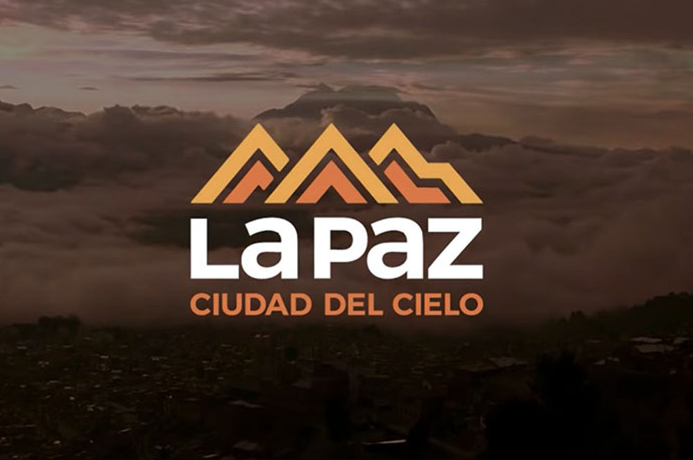
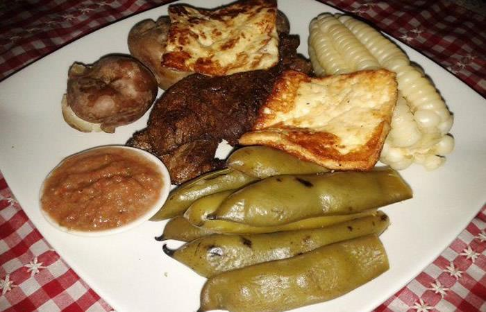
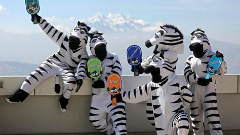
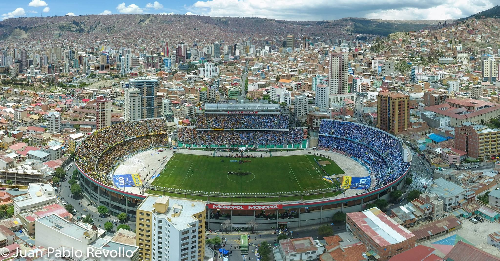
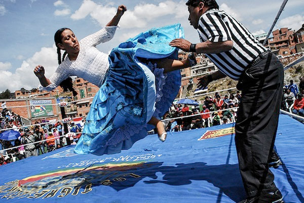
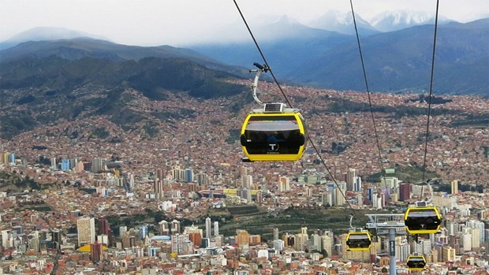
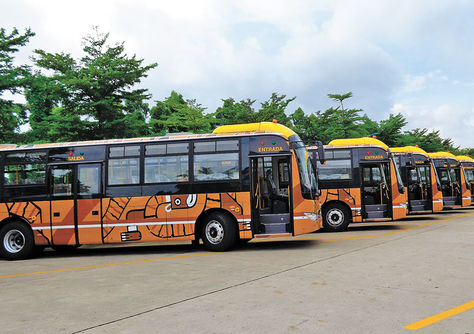
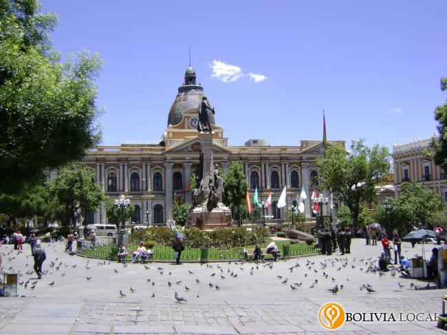
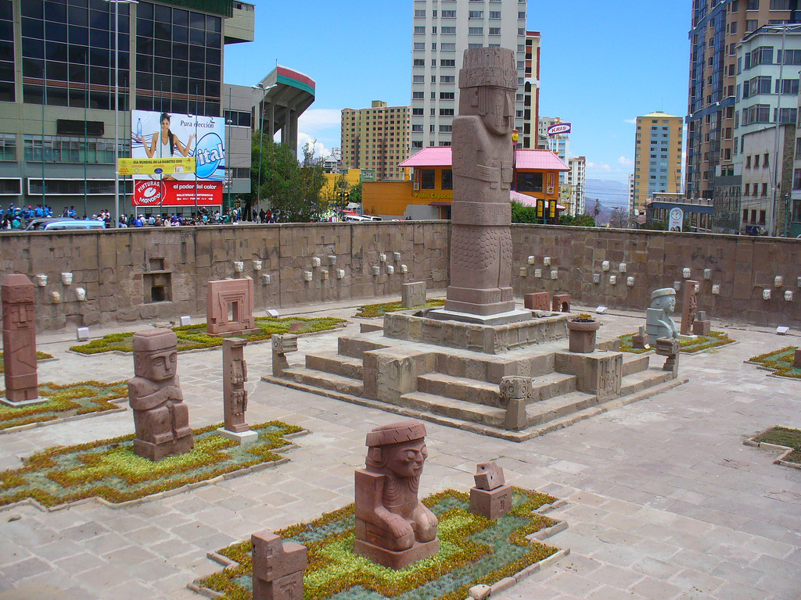

Ciudad Maravilla

La Paz ciudad del cielo, se encuentra a 3640 m.s.n.m por lo cual vivimos en las nubes. Este departamento se caracteriza por su clima frio y seco, por su gente hospitalaria, por la gastronomia, por sus culturas y biodiversidad, por su sociedad, por las noches frias pero acogedoras y las grandes vistas que se tiene en varios puntos de la ciudad.
Comida típica

La Paz tiene una variedad de comida típica. En día se debe empezar con un café y su marraqueta como desayuno, al medio día el plato paceño es importante para conocer la tradición paceña y para la tarde no puede faltar un api con pastel o buñuelo.
Cebritas

Las cebras son un ícono en la ciudad de La Paz, son las que ayudan a la sociedad en general. Controlan el transito en lugares muy concurridos, ayudan a personas con dificultades a realizar tareas vías públicas, son queridas por todo el pueblo paceño. Mayormente son jóvenes voluntarios los que se encargan de ponerse el traje y ser una ayuda ciudadana del día a día.
Clásico paceño

El fútbol tampoco se queda atrás en esta gran ciudad, si tienes la fortuna de visitaros en una fecha de clásico, no dudes en ir al estadio a ver la fiesta que se arma cuando los dos grandes equipos paceños chocan. The Strongest y Bolívar siempre presentan un gran espectáculo y las personas que se da cita al Hernando Siles le dan una matiz especial. No por nada son los equipos más representativos del fútbol boliviano.
Cholitas luchadoras

Pero en La Paz el fútbol no es el único deporte, una gran atracción son las famosas cholitas luchadoras. Mezclando las prácticas de la WWE y la lucha libre mexicana, estas luchadoras dominan el ring usando prendas tradicionales de los pueblos Aymara y Quechua
Tefeléricos

El transporte masivo también esta presente en La Paz. Es la ciudad que tiene la extensión de cables más larga del mundo. Esta ciudad cuenta con 8 líneas de teleférico, las cuales conectan las zonas norte con sur y este con oeste, pero también conectan con la ciudad vecina El Alto, la cual tiene 2 líneas de telférico adicionales. Es una locura la facilidad con la que se puede recorrer toda la ciudad en un día gracias a estos telefericos, sin mencionar las maravillosas vistas que se tiene desde ellos.
Pumakatari

El transporte masivo también esta presente en La Paz. El nombre de este transporte viene de la unión de Puma(felino andino) y Katari(serpiente), los dos animales totémicos de profundo significado cosmológico. Este transporte esta diseñado para encarar las grandes pendientes que tiene La Paz, evitando las zonas centricas para no caer en embotellamientos es un medio de transporte muy usado. También algunas de sus rutas tienen conexciones con las rutas del teleferico.
Plazas

Las plazas historicas que tiene la ciudad de La Paz también son un gran tesoro que tiene la ciudad. Algunas exiten desde hace 200 años y tienen una riqueza y significado historico impresionante.
TMonolitos

Monolito significa en griego "una sola piedra". Los monolitos naturales suelen poseer grandes e importantes dimensiones, siendo muchas veces considerados a simple vista como montañas. También exiten monolitos echos por el hombre los cuales estan desde hace siglos atrás, guardados en museos pero muchos de ellos siguen a plean vista en las runas de Tiwanaku. Tambien exiten algunos en la plazuela al frente del estadio Hernando Siles.